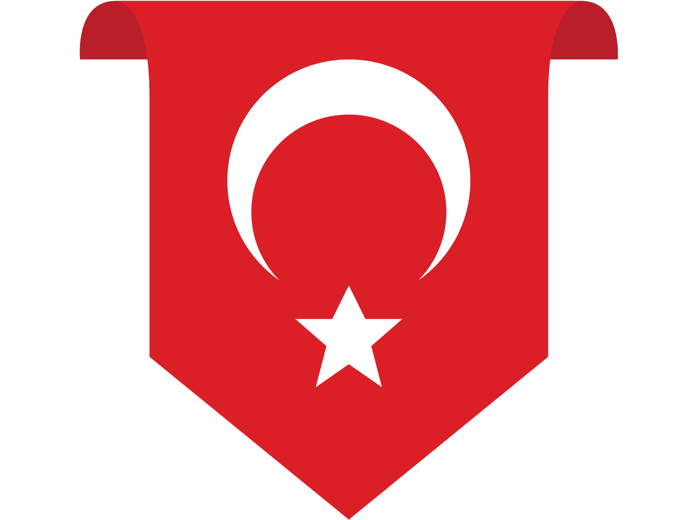

<!-- HEADER-FOOTER TEMPLATE -->
<link href="https://cdn.jsdelivr.net/npm/bootstrap@5.3.2/dist/css/bootstrap.min.css" rel="stylesheet">
<style>
  body {
    background: #f7f7fa;
    position: relative;
    min-height: 100vh;
  }
  body::before {
    content: "";
    position: fixed;
    z-index: 0;
    top: 0; left: 0; right: 0; bottom: 0;
    width: 100vw; height: 100vh;
    background: url('resimler/arkaplan.svg') center center no-repeat;
    background-size: 50vw auto;
    opacity: 0.2;
    pointer-events: none;
  }
  .navbar-flag {
    display: flex;
    align-items: center;
    height: 100%;
    margin-right: 0.5rem;
  }
  .navbar-flag img {
    max-width: 60px;
    max-height: 70px;
    width: 60px;
    height: auto;
    z-index: 2;
    box-shadow: 0 8px 24px 0 rgba(227,10,23,0.08);
    pointer-events: none;
    user-select: none;
    display: block;
    position: static;
  }
  @media (max-width: 991.98px) {
    .navbar-flag img { max-width: 36px; max-height: 48px; width: 36px; }
  }
  .nav-link.active {
    color: #d10000 !important;
    font-weight: 700 !important;
  }
  .nav-link.active small, .nav-link.active span {
    color: #d10000 !important;
  }
  @media (max-width: 991.98px) {
    body {
      padding-top: 70px;
    }
    .offcanvas .nav-link {
      color: #6c757d !important;
      text-decoration: none;
    }
    .offcanvas .nav-link:hover {
      color: #E30A17 !important;
      background: none !important;
      border: none !important;
      text-decoration: none;
    }
    .offcanvas .nav-link.active {
      color: #d10000 !important;
      font-weight: 700 !important;
      background: none !important;
      border: none !important;
    }
  }
</style>
<!-- Masaüstü Navbar -->
<nav class="navbar navbar-expand-lg navbar-light bg-white sticky-top shadow-sm d-none d-lg-flex">
  <div class="container">
    <span class="navbar-flag">
      
    </span>
    <a class="navbar-brand fw-bold d-flex align-items-center text-danger" href="index.html" style="margin-left:0;">
      <span class="ms-2">*TURK* Konferans</span>
    </a>
    <button class="navbar-toggler" type="button" data-bs-toggle="collapse" data-bs-target="#mainNavbar" aria-controls="mainNavbar" aria-expanded="false" aria-label="Menüyü Aç/Kapat">
      <span class="navbar-toggler-icon"></span>
    </button>
    <div class="collapse navbar-collapse" id="mainNavbar">
      <ul class="navbar-nav ms-auto mb-2 mb-lg-0">
        <li class="nav-item"><a class="nav-link" href="index.html">Ana Sayfa</a></li>
        <li class="nav-item"><a class="nav-link" href="echolink-nedir.html">EchoLink Nedir</a></li>
        <li class="nav-item"><a class="nav-link" href="echolink-kurulum.html">EchoLink Kurulum</a></li>
        <li class="nav-item"><a class="nav-link" href="fonetik-alfabe.html">Fonetik Alfabe</a></li>
        <li class="nav-item"><a class="nav-link" href="kurallarimiz.html">Kurallarımız</a></li>
        <li class="nav-item"><a class="nav-link" href="gruplarimiz.html">Gruplarımız</a></li>
        <li class="nav-item"><a class="nav-link" href="iletisim.html">İletişim</a></li>
      </ul>
    </div>
  </div>
</nav>
<!-- Mobil Offcanvas Menü -->
<nav class="navbar navbar-light bg-white fixed-top d-lg-none shadow-sm">
  <div class="container-fluid">
    <a class="navbar-brand fw-bold d-flex align-items-center text-danger" href="index.html">
      <span class="navbar-flag">
        
      </span>
      <span class="ms-2">*TURK* Konferans</span>
    </a>
    <button class="navbar-toggler" type="button" data-bs-toggle="offcanvas" data-bs-target="#mobileMenu" aria-controls="mobileMenu" aria-label="Menüyü Aç/Kapat">
      <span class="navbar-toggler-icon"></span>
    </button>
    <div class="offcanvas offcanvas-top bg-white text-danger" tabindex="-1" id="mobileMenu" aria-labelledby="mobileMenuLabel" style="height:100vh;">
      <div class="offcanvas-header">
        <h5 class="offcanvas-title" id="mobileMenuLabel">Menü</h5>
        <button type="button" class="btn-close" data-bs-dismiss="offcanvas" aria-label="Kapat"></button>
      </div>
      <div class="offcanvas-body d-flex flex-column align-items-center justify-content-center p-0">
        <ul class="nav flex-column w-100 text-center">
          <li class="nav-item"><a class="nav-link fs-5 py-3" href="index.html">Ana Sayfa</a></li>
          <li class="nav-item"><a class="nav-link fs-5 py-3" href="echolink-nedir.html">EchoLink Nedir</a></li>
          <li class="nav-item"><a class="nav-link fs-5 py-3" href="echolink-kurulum.html">EchoLink Kurulum</a></li>
          <li class="nav-item"><a class="nav-link fs-5 py-3" href="fonetik-alfabe.html">Fonetik Alfabe</a></li>
          <li class="nav-item"><a class="nav-link fs-5 py-3" href="kurallarimiz.html">Kurallarımız</a></li>
          <li class="nav-item"><a class="nav-link fs-5 py-3" href="gruplarimiz.html">Gruplarımız</a></li>
          <li class="nav-item"><a class="nav-link fs-5 py-3" href="iletisim.html">İletişim</a></li>
        </ul>
      </div>
    </div>
  </div>
</nav>
<!-- /HEADER -->
<!-- ... sayfa içeriği ... -->
<!-- FOOTER -->
<footer class="bg-light text-center text-muted py-4 mt-5 border-top">
  <div class="container">
    <div class="mb-1">© Tüm Hakları Saklıdır | Echolink *TURK* Konferans Odası</div>
    <div class="small"><a href="https://ta7hbK.com" class="text-danger fw-bold text-decoration-none">TA7HBK</a> tarafından sevgiyle hazırlandı</div>
  </div>
</footer>
<!-- /FOOTER --> 